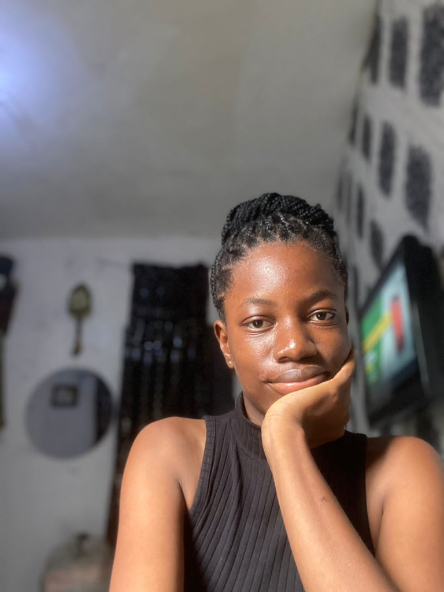

Olasubomi Adegun “Shubby”
Storyteller · Relationship Curator · Writer
Nigeria · shubby-eta.vercel.app · loveandlinks.org · LinkedIn · @olasubomi.adegun · @Olashubby_
Storyteller, relationship curator, and criminology writer exploring love, growth, and human behaviour. Founder and Operations Lead of Love and Links, a human-powered matchmaking platform, and creator of Grab A Seat With Shubby, a writing house of 50+ articles across series on modern relationships, identity, criminology, and everyday Nigerian life. Blends original social research, newsletter publishing, community facilitation, and cultural storytelling to help people understand connection and choose it more intentionally.
Professional experience
Founder & Operations Lead · Love and Links
Premium human-powered matchmaking · loveandlinks.org · Motto: “Pairing souls, one connection at a time.”
- Founded and operate a matchmaking platform that replaces swipe culture with curated, human-reviewed introductions for people seeking real romantic connection.
- Lead operations across matching, client experience, and community with a four-person team covering PR, community records, and technology.
- Designed the matching journey: profile review, private red- and green-flag feedback, compatibility search, confidential recommendation, client approval, and post-match guidance.
- Built and facilitate Cupid’s Corner, a WhatsApp community for dating activities, relationship tips, polls, and match previews.
- Run original dating surveys to inform matching and writing; produce promotional and behind-the-scenes video; capture client testimonials on match quality.
Creator & Writer · Grab A Seat With Shubby
Independent writing platform · Newsletter: Your Fairy Godfriend · Portfolio: shubby-eta.vercel.app
- Publish 50+ articles across six series, using humour, emotional honesty, and social observation to examine love, identity, culture, and behaviour.
- Write and edit Your Fairy Godfriend, a personal-reflection newsletter (54+ subscribers), including seasonal and relationship-focused editions.
- Contribute cultural storytelling to Amala Story, including “The Perfect Date Debate” on romance in contemporary Nigerian dating.
- Translate criminological theory and Nollywood crime narratives into accessible public writing; produce short-form video rants and series intros.
Classroom Teacher · National Youth Service Corps (NYSC)
Documented in the series Corper’s Diary
- Served as an NYSC teacher, working in a school setting (assembly, staff room, classroom) and navigating the gap between formal training and lived classroom reality.
- Turned daily service into narrative non-fiction, capturing humour, fatigue, cultural texture, and the dignity of ordinary teaching work for a public audience.
Education & research
Undergraduate studies in Criminology
- Final-year thesis: How police brutality affects public perception of law enforcement officers in Nigeria (Ogun State case study). 60% of respondents had experienced brutality or knew someone who had, including people aged 36 to 45, used to argue that harassment exceeds appearance-based stereotypes and points to systemic power.
- Independent relationship survey on what most often breaks relationships (cheating ranked highly), later informing the essay “How to Know If Your Partner Is Cheating on You.”
- Public scholarship connecting classical criminology (including Lombroso and tattoo stigma) to Nigerian street life, policing, and popular film.
Selected publications & writing
How to Know If Your Partner Is Cheating on You
The Perfect Date Debate
Dearest Santa
Review of Lombroso’s Syndrome
Brotherhood (2022): A Nollywood Thriller Through a Criminological Lens
The Dating Market Chronicles · Setan!
Dear Me, from the Me of 2025 to the Me of 2009
Corper’s Diary: Day 2: Corporate vs Reality · Day 3: Ifa Money
Writing series
Platforms & initiatives
- Your Fairy Godfriend: personal newsletter (54+ subscribers).
- Cupid’s Corner Q&A: weekly community channel for singles.
- Relationship & Dating Surveys: research archive informing writing and matching.
- Love and Links: matchmaking platform and counselling support.
Core skills
Languages & working style
- English: professional written and spoken. Yoruba: used in cultural writing and dialogue in published essays.
- Voice defined by authenticity, curiosity, and emotional honesty, moving between humour, research, and intimate reflection. Open to roles in writing, communications, editorial, community, relationship programmes, research communication, and brand storytelling.
I am building a platform that explores human connection through writing, observation, and real-life engagement, at the intersection of storytelling, relationships, and emotional awareness. Olasubomi Adegun, Creator, Love and Links